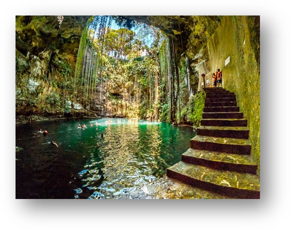

Calatoria este una dintre cele mai frumoase experiente din viata, alimentata de dorinta de a cunoaste diferite culturi, de a descoperi peisaje care iti taie respiratia si locuri cu un farmec aparte. Aceasta ofera numeroase avantaje: te ajuta sa devii independent, sa te adaptezi situatiilor neprevazute si sa iti deschizi mintea intalnindu-te cu diferiti oameni din jurul lumii.
Principalul factor care ne atrage spre calatorie este frumusetea. Fie ca este regasita in peisaje, arhitectura sau oameni, acesta ne inconjoara pretutindeni.
Cenotele sunt piscinele naturale ale Mexicului, pesteri destul de adanci umplute cu apa.
Cenota Ik-Kil, situata in Peninsula Yucatan din Mexic, este una dintre principalele atractii care imbina istoria si ruinele mayase din apropierea sa cu frumusetea naturala.
Asemenea unei piscine naturale, ascunsa intre peretii de calcar din jungla, atrage mii de vizitatori dornici sa se racoreasca in apele limpezi de sub perdelele de liane.

In Italia, in Golful Salerno se gaseste Coasta Amalfi, o coasta abrupta cu peisaje fantastice, strabatuta de o sosea care pe alocuri a fost sapata in stanca.
De-a lungul sau se gasesc mici orase precum Positano si Amalfi, ai caror locuitori si turisti se bucura de plaje cu valuri cristialine si bucate traditionale delicioase.
Bali este cea mai populara insula din Indonezia, fiind una dintre cele mai atractive destinatii turistice din lume.
Aceasta insula ofera peisaje variate, de la plaje cu nisip fin la cascade impreisonante.
Pe langa satele traditionale si templele celebre, in Bali te poti bucura si de experiente inedite, precum leagane imense deasupra palmierilor.

Fosta capitala a Greciei si capitala istorica a regiunii Peloponez, Nafplio este unul dintre cele mai frumoase si mai romantice orase din Grecia.
Arhitectura impresioneaza prin strazi inguste, pavate cu caramida, cladiri si restaurante fermecatoare si castele medievale.
La marginea orasului se gasesc promade si plaje incantatoare, cu o priveliste superba catre mare.